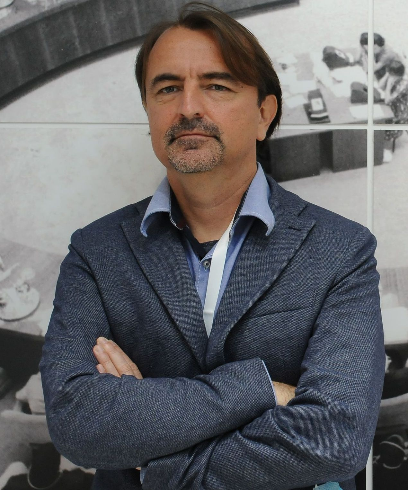

Professor, Department of Philosophy, University of Belgrade
e-mail: sperovic@f.bg.ac.rs, perovicslobodan@gmail.com
Address: Odeljenje za filozofiju, Filozofski fakultet, Čika Ljubina 18-20, 11000 Beograd, Serbia
Academic positions
Full Professor, Department of Philosophy, University of Belgrade (since 2020)
Adjunct Professor, Program in Astrobiology, Faculty of Biology, University of Belgrade (2022–)
Adjunct Professor, Ph.D. Program, Faculty of Medicine, University of Belgrade (2021–)
Adjunct Professor, Faculty of Chemistry, University of Belgrade (2019–2020)
Associate Professor, Department of Philosophy, University of Belgrade (2015–2020)
Assistant Professor, Department of Philosophy, University of Belgrade (2010–2015)
Guest Lecturer, Department of History and Philosophy of Science, University of Pittsburgh (2014)
Guest Lecturer, Center for Advanced Studies (ERC funded), University of Rijeka, Croatia (2014/15/16)
Postdoctoral Fellow, Center for Philosophy of Science, University of Pittsburgh (2009–2010)
Visiting Assistant Professor, Department of Philosophy, Carleton University, Ottawa (2006–2009)
Visiting Assistant Professor, Philosophy Department, St. Mary's University, Halifax (2005–6)
Education
Ph.D., York University, Toronto (2005)
M.A., University of Manitoba (1999)
B.A., University of Belgrade (1997)
Grants and service
Cooperation partner, "Network epistemology in practice", ERC Consolidator Grant, Adrian Wuetrich, Technical University Berlin (2022–2027)
Principal Investigator, "Re-establishing Institutional Network in Southeast and Central European Philosophy of Natural Sciences", Visegrad Fund grant, 2022 (won and declined)
President, POND (Philosophy of Science around the Mediterranean) (2021–present)
Convener, Philosophy of Scientific Experimentation Conference Series (links:
PSX1
PSX2
PSX3
PSX4
PSX5
PSX6)
Editorial Board Member, The Balkan Journal of Philosophy (University of Sofia)
Director, Institute of Philosophy, University of Belgrade (2018–2021)
Chair, Department of Philosophy, University of Belgrade (2015–2018)
Editor, Belgrade Philosophical Annual (Published by the Institute of Philosophy, University of Belgrade) (2014–2021)
Board Member, Center for Advanced Studies (ERC), University of Rijeka, Croatia (2011–2018)
Director, Computer Simulations and Numerical Experiments in Philosophy of Science (2017)